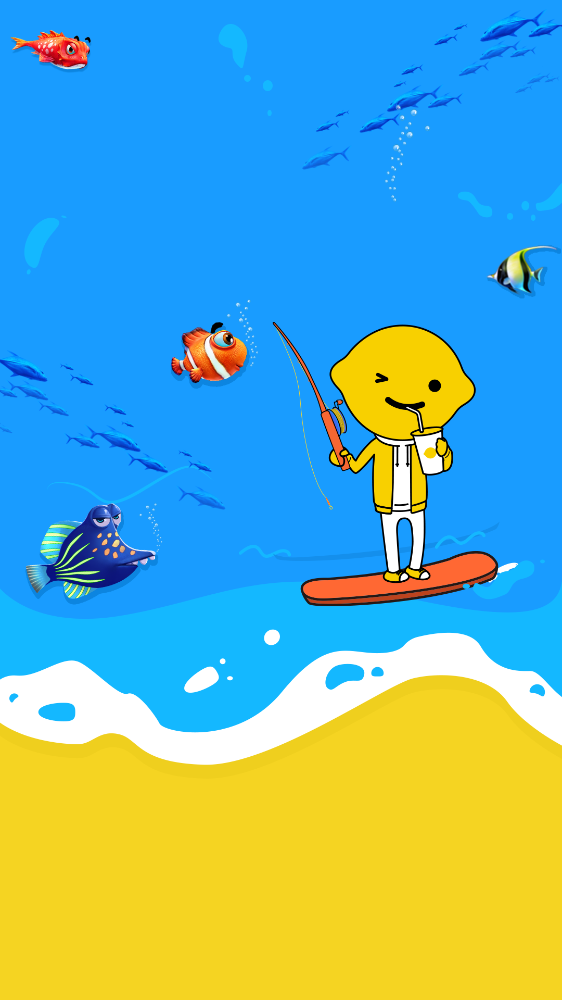

<!DOCTYPE html>
<html lang="en">
	<head>
		<meta charset="UTF-8">
		<!-- 设置缩放 -->
		<meta name="viewport" content="width=device-width, initial-scale=1, user-scalable=no, minimal-ui" />
		<!-- 可隐藏地址栏，仅针对IOS的Safari（注：IOS7.0版本以后，safari上已看不到效果） -->
		<meta name="apple-mobile-web-app-capable" content="yes" />
		<!-- 仅针对IOS的Safari顶端状态条的样式（可选default/black/black-translucent ） -->
		<meta name="apple-mobile-web-app-status-bar-style" content="black" />
		<!-- IOS中禁用将数字识别为电话号码/忽略Android平台中对邮箱地址的识别 -->
		<meta name="format-detection" content="telephone=no, email=no" />
		<!-- 启用360浏览器的极速模式(webkit) -->
		<meta name="renderer" content="webkit">
		<!-- 避免IE使用兼容模式 -->
		<meta http-equiv="X-UA-Compatible" content="IE=edge">
		<!-- 针对手持设备优化，主要是针对一些老的不识别viewport的浏览器，比如黑莓 -->
		<meta name="HandheldFriendly" content="true">
		<!-- 微软的老式浏览器 -->
		<meta name="MobileOptimized" content="320">
		<!-- uc强制竖屏 -->
		<meta name="screen-orientation" content="portrait">
		<!-- QQ强制竖屏 -->
		<meta name="x5-orientation" content="portrait">
		<!-- UC强制全屏 -->
		<meta name="full-screen" content="yes">
		<!-- QQ强制全屏 -->
		<meta name="x5-fullscreen" content="true">
		<!-- UC应用模式 -->
		<meta name="browsermode" content="application">
		<!-- QQ应用模式 -->
		<meta name="x5-page-mode" content="app">
		<!-- windows phone 点击无高光 -->
		<meta name="msapplication-tap-highlight" content="no">	
		<title>首页</title>
		<link rel="stylesheet" type="text/css" href="css/css/inif.css"/>
		<link rel="stylesheet" type="text/css" href="css/css/index.css"/>
		<!--<link rel="stylesheet" type="text/css" href="css/bootstrap.min.css"/>
		<link rel="stylesheet" type="text/css" href="css/index.css"/>-->
	</head>
	<body>
		<div id="bkg">
			
			<a class="down" href="start.html" ></a>
			<div class="img1"></div>
			<div class="img1"></div>
			<div class="img1"></div>
			
		</div>
		<!--<script type="text/javascript">
			var btn = document.querySelector('.btn')
			btn.addEventListener('touchstart',function(){
				btn.style.transform='scale(0.8)'
			})
			btn.addEventListener('touchend',function(){
				btn.style.transform='scale(1)'
			})
		</script>-->
		<!--<section id="fish">
			
			
			<a href="warehouse.html" class="gift">
				
			</a>
			<a href="start.html" class="fish_btn" >
				
			</a>
		</section>-->
		<!--<div id="" class="model_index">
			
			
		</div>-->

		<script src="js/login.js" type="text/javascript" charset="utf-8"></script>
		<script src="./js/jquery-3.1.1.min.js"></script>
		<script type="text/javascript" src="js/index.js" ></script>

	</body>

</html>